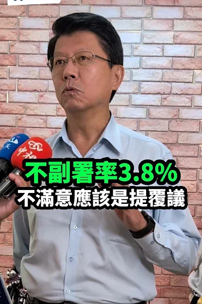
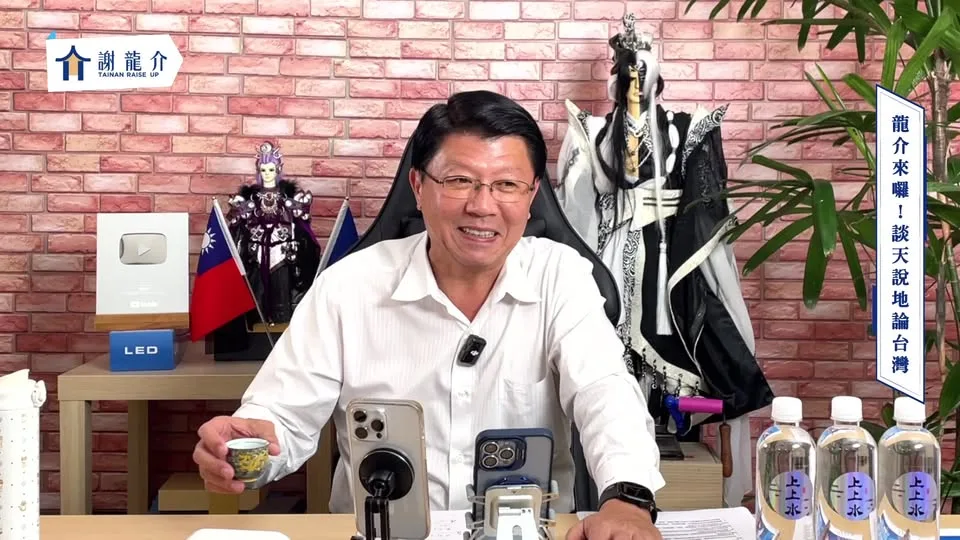
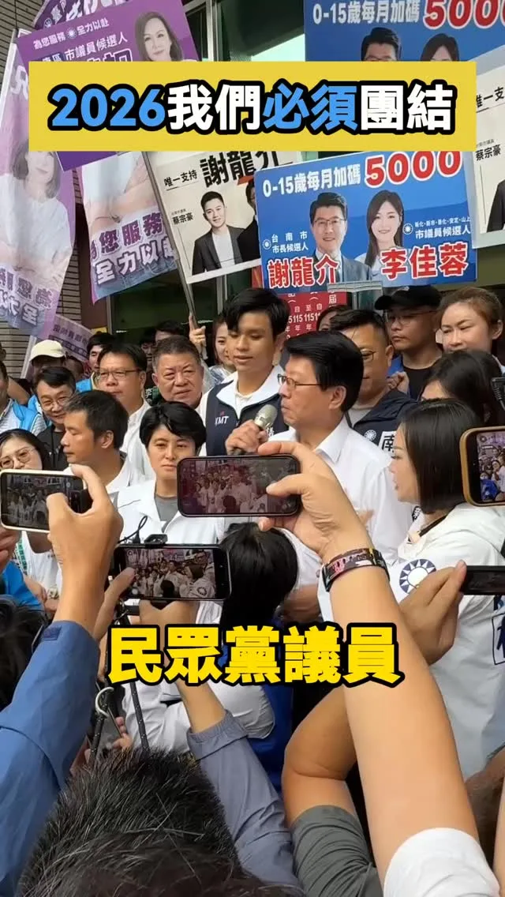
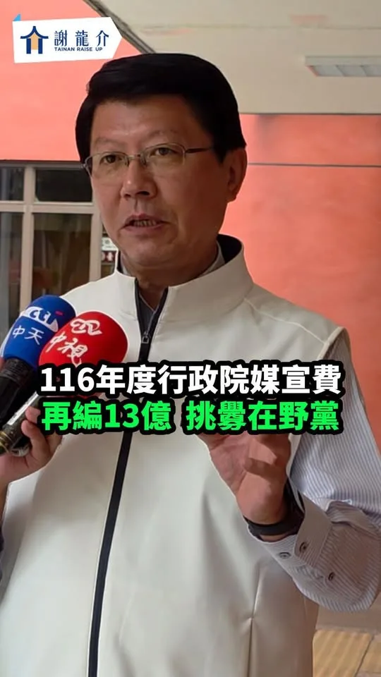
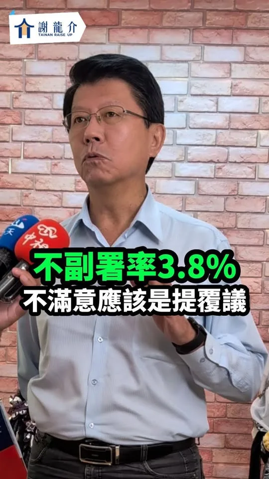
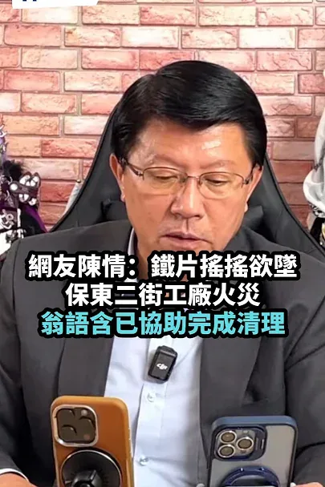
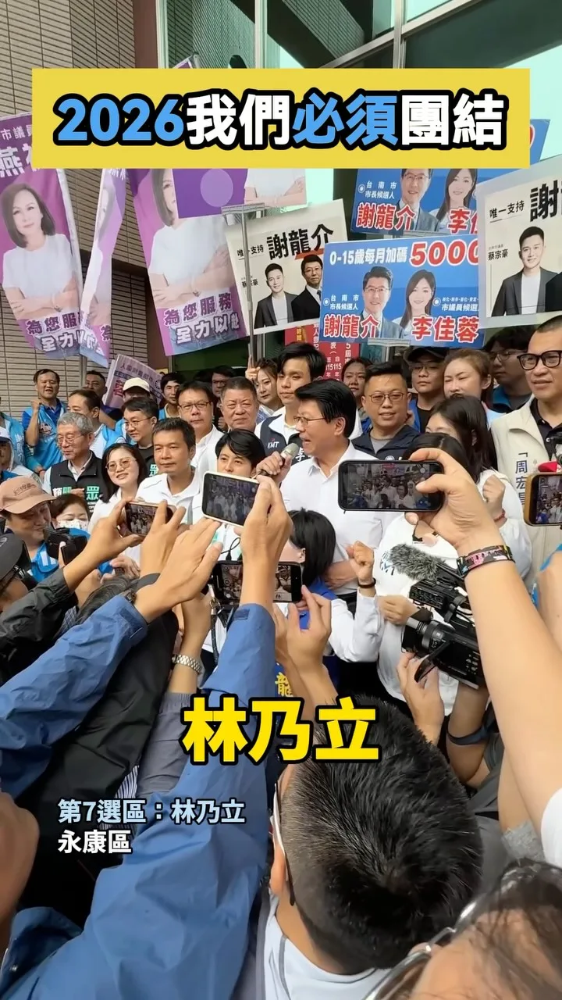
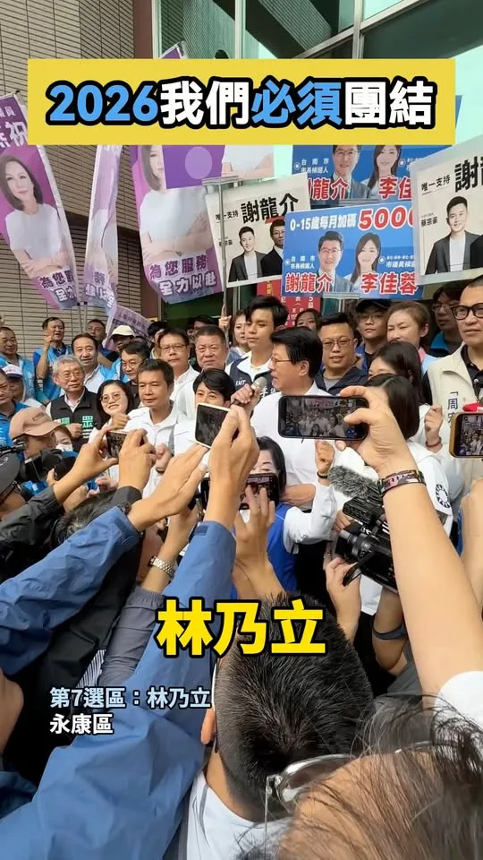
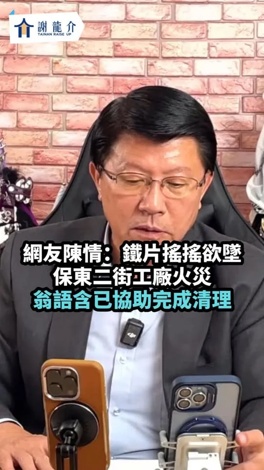

龍介來囉！和你談天說地論台灣｜龍介的直播
Accounts
| 平台 | 帳號 | 已收錄貼文 | 最後更新 |
|---|---|---|---|
| 官網 | https://www.joo.com.tw/tel062268268/ | 0 | — |
| https://www.facebook.com/TEL062268268/ | 104 | 2026-09-09 17:45 | |
| https://www.instagram.com/hsiehlungchieh/ | 113 | 2026-09-05 09:46 | |
| Threads | https://www.threads.com/@hsiehlungchieh | 103 | 2026-09-10 16:13 |
| YouTube | https://www.youtube.com/channel/UCwmpCYMVf3j9D_-dToJxPNw | 107 | 2026-09-11 11:53 |
| LINE 官方帳號 | https://page.line.me/lcz1318b | 0 | — |
| TikTok | https://www.tiktok.com/@longuy1003 | 0 | — |
| 官網 | https://inewslong.com/ | 17 | 2026-09-04 22:58 |
Timeline
顯示 444 / 444 則
龍介來囉！和你談天說地論台灣｜龍介的直播

@hsiehlungchieh:超徵稅收應合理的分配「還稅、國防、民生、社會福利」

Undermining Taiwan's Democracy! Cho Jung-tai Uses "Refusal to Countersign" to Restrain the Legisl...


支持龍介線上捐款：https://donate.newebpay.com/062268268/hsiehlungchieh115 龍介的 Tiktok 開放 Call in 👉 https://www.tiktok.com/@longuy1003/live 👉 Call in 步驟：請至 Tiktok 搜尋「謝龍介」並找到龍介的直播，直播畫面的下方申請「訪客連線」，龍介兄會隨機接通。
重機圈的不滿！張雪機車被扣…臺灣淪為先禁國家
龍介的台語秘笈！陳菁徽的一日台語老師

@hsiehlungchieh:台南藍白合作全壘打！
@hsiehlungchieh:今年媒宣費才砍半...明年行政院媒宣費再編13億

今年媒宣費才砍半...明年行政院媒宣費再編13億

Long-Chieh is here! Discussing Taiwan and everything under the sun with you | Long-Chieh's Livest...

@hsiehlungchieh:神力女超人來相挺、女力應援翻轉大台南 09月12日(六)，南投縣長許淑華來到台南與龍介一起翻轉大台南、人民贏一次！

Excess Tax Revenue Should Be Allocated Rationally: Tax Refunds, National Defense, Public Liveliho...

傷害台灣民主！卓榮泰用「不副署」箝制立法院…行政院稱僅3.8%立院三讀法案未副署
20260908 行政院提追加六千億預算..中聯毒油案...泰山向4公司提告求償10億！回覆網友陳情進度：道路安全、交通議題 @longmedia ｜龍介的直播

Netizen Appeal: After the factory fire on Baodong 2nd Street, metal sheets were left teetering… W...

台南藍白合作全壘打！

台南藍白合作全壘打！

今年媒宣費才砍半...明年行政院媒宣費再編13億
@hsiehlungchieh:今晚龍介直播暫停一次！各位市民朋友我們下集見
Thank you to all KMT Tainan City Councilor candidates for joining Long-chieh in registering for t...

@hsiehlungchieh:＃十大新政全面升級 ＃育兒三箭育兒無憂 🏹幼兒日常免費： 「0到3歲嬰幼兒尿布免費」是龍介4年前就提出的重要政見。養囝仔，除了奶粉，尿布也是每天少不了的固定開銷。 台南本身就有優質尿布廠商，未來由市府大量採購、降低成本，直接讓嬰幼兒免費使用，實實在在替新手爸媽省下一筆育兒開銷、減輕養育負擔。 🏹醫療健保免費： 孩子健康，是每個父母最掛心的代誌。龍介提出「0到6歲幼兒健保全額免費」，健保費由市政府補助，替家庭多扛一點，讓台南孩子從出生到上小學前，不用再由家長負擔健保費，也讓每一個囝仔都能安心、健康長大。 🏹公托機構翻倍： 目前台南僅有19處公共托育機構，包括6家公設民營托嬰中心、13家公共托育家園。龍介上任後，要讓公托數量直接翻倍，擴大托育量能，讓爸媽不再為了搶名額傷腦筋。 同時活化閒置校舍，轉型公托空間，就近提供托育服務，方便家長接送，讓孩子有更安全、安心的成長環境。 少子化，不是喊幾句「鼓勵大家多生」就能解決。年輕人不是不喜歡孩子，而是從孩子一出生開始，奶粉、尿布、健保、托育，每一項都是錢，都是爸媽每天要面對的現實壓力。

超徵稅收應合理的分配「還稅、國防、民生、社會福利」
支持龍介線上捐款：https://donate.newebpay.com/062268268/hsiehlungchieh115 龍介的 Tiktok 開放 Call in 👉 https://www.tiktok.com/@longuy1003/live 👉 Call in 步驟：請至 Tiktok 搜尋「謝龍介」並找到龍介的直播，直播畫面的下方申請「訪客連線」，龍介兄會隨機接通。
Uproar in the Heavy Motorcycle Community! Zhang Xue Bikes Seized… Has Taiwan Become a "Ban-First"...

網友陳情：保東二街工廠火災後，鐵片搖搖欲墜…翁語含已協助完成清理
台南藍白合作全壘打！
蔣萬安子交換生風波！前北一女教師痛批民進黨 〈 蔣萬安子交換生風波！前北一女教師痛批民進黨 〉本文來自於《 龍傳媒新聞 iNews Long 》。 從國中畢業獲得市長獎一直到錄取台北市教育局的「國際交換生」計畫，台北市長蔣萬安長子蔣得立近期成為綠營追殺目標...
Media Spending Budget Was Just Cut in Half… Yet the Executive Yuan Requests Another 1.3 Billion f...
今晚龍介直播暫停一次 各位市民朋友我們下集見
@hsiehlungchieh:感謝所有國民黨臺南市議員參選人陪龍介登記參選臺南市長